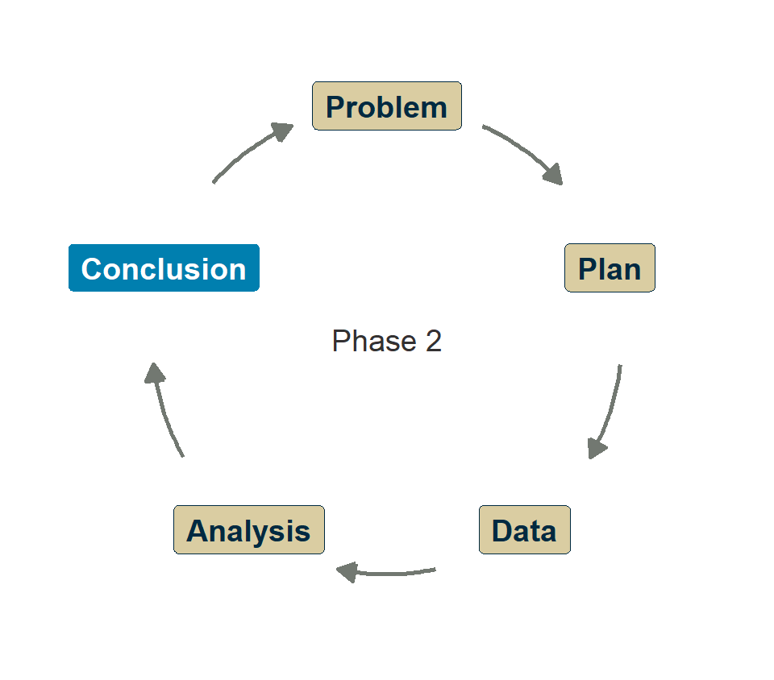
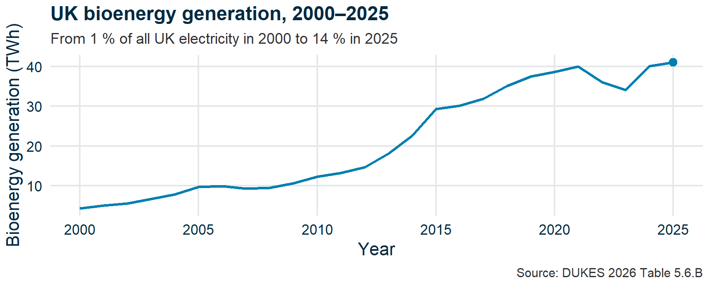
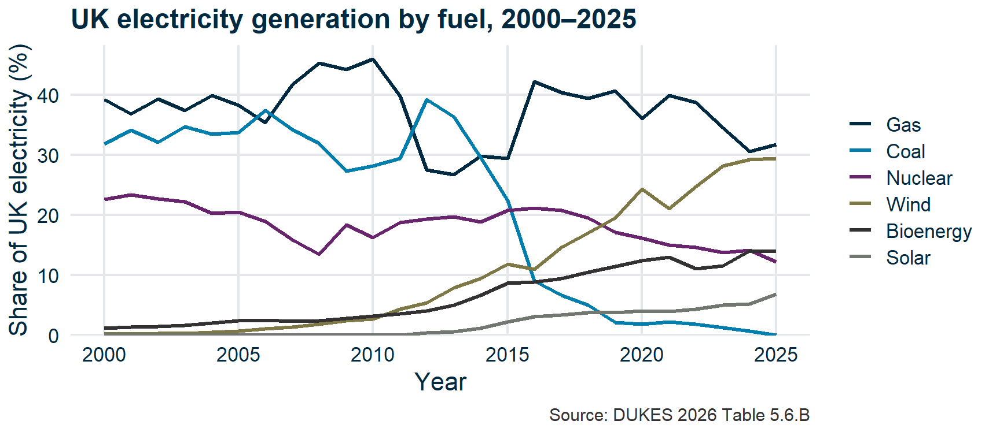
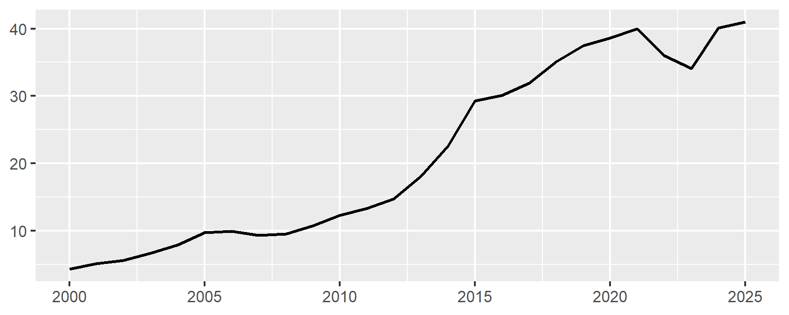

Bringing it together
Research Skills — Week 10
Recap
Recap
- Report structure
- Summary swap
- Peer review in science
- Common pitfalls
- Telling the story honestly
- Peer review briefing
- Wrap-up
The full journey
You’ve designed an investigation, collected and analysed data, checked assumptions, fitted models, and identified limitations.
Now: write it up so someone else can understand it and act on it.
Questions?

Submit questions:
PollEv.com/geol
text geol to 07480 781235
Report structure
- Recap
Report structure
🎓 Concept block 1
- Summary swap
- Peer review in science
- Common pitfalls
- Telling the story honestly
- Peer review briefing
- Wrap-up
The policy report
| Section | Length | Purpose |
|---|---|---|
| Summary | 200–300 words | The finding, the evidence, the recommendation |
| Introduction | 200–300 words | The question, why it matters |
| Methods | 250–400 words | Data, approach, why these tests |
| Results | 500–750 words | Figures, tests, plain-language interpretation |
| Discussion | ~500 words | What it means, caveats, recommendation |
The summary test (revisited)
A reader who stops after the summary should still know:
- What you investigated
- What you found
- What you recommend
If any of these are missing, the summary needs work.
Methods: enough to reproduce
Your methods section should answer:
- Where did the data come from?
- What did you do to clean/prepare it?
- Which tests, and why?
- What software and versions?
Could someone clone your repo and replicate your analysis?
Results: figures that tell a story
Every figure should have:
- A clear “so what”
- A caption that tells the reader what to see
- Axis labels with units
- A reference in the text
Every test result should include:
- The test used
- The p-value and an effect size or CI
- A plain-language interpretation
A figure that earns its place

Every line equally loud

w10-annotation-before.R · idea after Heiss (2026)
One story, labelled directly

w10-annotation-after.R · idea after Heiss (2026)
Good figures in the wild
Each makes one decision well. Look at the figure, then ask what it chose not to show.
- Carbon Brief — UK’s electricity was cleanest ever in 2024: every title states the finding; the fuel chart labels its lines and greys out nuclear.
- Our World in Data — Share of electricity by source: sources and downloadable data sit beneath the chart, and the reader can add a country — compared to what? built in.
- Financial Times — Visual Vocabulary: choose the chart by the relationship you want to show, not by habit.
- Ed Hawkins — Show your stripes: drops axes and numbers entirely for one unmissable message. Right for a poster; would it survive a policy report?
- The Pudding — Women’s pockets are inferior: measures real jeans, draws the pockets to scale, and asks what actually fits.
Summary swap
- Recap
- Report structure
Summary swap
✏️💬 Exercise 1
- Peer review in science
- Common pitfalls
- Telling the story honestly
- Peer review briefing
- Wrap-up
Trade summaries
Swap your draft summary with someone from a different group.
As a reader, answer:
- What is the main finding?
- Do I trust it?
- What would I do with this information?
If the reader can’t answer these from the summary alone, it needs work.
Attendance
Peer review in science
- Recap
- Report structure
- Summary swap
Peer review in science
🎓 Concept block 2
- Common pitfalls
- Telling the story honestly
- Peer review briefing
- Wrap-up
How it works
Submit → Editor assigns reviewers → Anonymous critique → Revise and resubmit.
Why it matters
- It’s how science self-corrects
- Catches errors the authors missed
- Challenges assumptions
- Improves clarity
Its weaknesses
- Slow
- Biased toward established researchers and ideas
- Doesn’t catch fraud well
- Can be superficial
What makes a good review
- Specific — not “this could be better” but “the CI is missing from Table 2”
- Constructive — what to fix, not just what’s wrong
- Focused on argument and evidence — not just grammar
Your Week 4 GitHub Issues review was peer review. You’ll do it again now, with higher standards.
Common pitfalls
- Recap
- Report structure
- Summary swap
- Peer review in science
Common pitfalls
💬✏️ Exercise 2: HolmesCo’s greatest hits
- Telling the story honestly
- Peer review briefing
- Wrap-up
Quick-fire: spot the problem
Six excerpts from fictional reports. Two minutes each. What went wrong, and at which PPDAC stage?
Pitfall 1
“The data clearly demonstrate that offshore wind is the most cost-effective energy source.”
Conclusion. Not supported by the data shown. The report only compared three sources and used levelized cost from 2019.
Pitfall 2

Conclusion. The reader can’t interpret it. A figure that isn’t discussed is decoration, not evidence.
Pitfall 3
“p = 0.04, therefore the effect is significant and the policy should be adopted.”
Analysis. No effect size, no CI, no discussion of practical significance. “Is that a big number?”
Pitfall 4
“The results prove that solar power will eliminate fossil fuel use by 2040.”
Conclusion. Overstatement. “Prove” is almost never appropriate. Extrapolation without caveats.
Pitfall 5
“We used statistical analysis to test the hypothesis.”
Plan. Methods too vague to reproduce. Which test? Why? On what data?
Pitfall 6
A report with no limitations section.
Conclusion. Every analysis has limitations. Omitting them doesn’t make them disappear — it makes the reader distrust you.
Telling the story honestly
- Recap
- Report structure
- Summary swap
- Peer review in science
- Common pitfalls
Telling the story honestly
🎓 Concept block 3
- Peer review briefing
- Wrap-up
The key habits
These are the questions that run through the whole course:
The refrains
“Is that a big number?” / “Compared to what?”
Week 2
“What assumptions are we making?”
Week 3
“How plausible was this before we tested?”
Week 6
“What is the model not capturing?”
Week 8
Shape the message, not the data
A figure for a reader is built around one message:
- Write the headline first: what should the reader take away?
- Cut or aggregate detail that doesn’t advance the story; mute axes and gridlines.
- Connect the numbers to your readers’ interests and lives.
Choosing what to emphasize is editing. Changing the evidence to fit the story is HolmesCo.
The analyst you want to be
A good report uses these questions reflexively.
A HolmesCo report ignores them.
Your goal: be the analyst whose work a policy-maker can trust.
Peer review briefing
- Recap
- Report structure
- Summary swap
- Peer review in science
- Common pitfalls
- Telling the story honestly
Peer review briefing
📋 For the application session
- Wrap-up
The process
In the application session:
- Finalize your draft (20 min)
- Review someone else’s report from a different group (40 min)
- File 3–4 GitHub Issues using the updated checklist
- Debrief and revise (30 min)
The review template is more demanding than Week 4’s — it now includes effect sizes, assumptions, reproducibility, and overstatement checks.
Wrap-up
- Recap
- Report structure
- Summary swap
- Peer review in science
- Common pitfalls
- Telling the story honestly
- Peer review briefing
Wrap-up
Any questions we missed?
Submit questions:
PollEv.com/geol
text geol to 07480 781235
Next time
Application session: “Review, revise, submit”
Bring a complete draft. Whatever is committed at minute 30 gets reviewed.
This is the last session. Make it count.